Psychopy is a free software package written in the Python programming language for creating and running cognitive/psychophysics experiments. This introductory class is aimed at beginners and does not require any programming experience.
Now that we have our movie structure:

We can add the movie's scene components.
Click on Stimulus in the Flow to open the scene, then click  in the Components panel.
in the Components panel.
A box pops up with several options for the image. Notice the default duration of an image is 1 second.
In the Image dialoge box, we need tell Psychopy where to look for this component of the scene.
In your Psychopy folder, there is a subdirectory called 'images'. This subdirectory holds images that can be used in for this scene. Lets use the cat_eyes.jpeg file. In the Image dialoge box, enter the path to the file like so:
 Click OK
Click OK
We can test to see if this works by running the movie. Click the Run icon  on the top right of the Psychopy window. Enter '001' as the participant number.
on the top right of the Psychopy window. Enter '001' as the participant number.
In your Psychopy directory, you will now see a 'data' subdirectory with the data saved in the form of 001filenamedate.csv. We will discuss the contents of the .csv later.
The movie works, but usually there are many scenes in a movie, and in psychological experiments the scene is often repeated.
In the Flow, click the Insert Loop button.
Click the first dot immediately following Stimulus and the second dot immediately before it. A dialog box apears with several options. Name it 'trials', the stimulus will loop 5 times by default.
Run the experiment again.
You will have noticed that there was only one presentation of the kitten scene, any idea why? The kitten scene was actually presented for 1 second, 5 times, but there was no gap between the scenes.
An interstimulus interval (ISI) is required to separate each scene. In the Components panel, click Custom then the 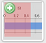. The default ISI is 0.5 seconds. Click OK, there is now a pink shaded area for 0.5 seconds.
Put the ISI before the image by changing the start time of the to 0.5 and the duration to 1.0.
 Run the movie again.
Run the movie again.
So we have 5 scene presentations, but what about recording a response? Let's add a button press for reaction time and accuracy.
Click on the  in the Components panel. There are several options again, type 'space' into the Allowed keys box to indicate a response by spacebar press. Click OK and the key response appears in the workspace.
in the Components panel. There are several options again, type 'space' into the Allowed keys box to indicate a response by spacebar press. Click OK and the key response appears in the workspace.
Click again on the in the scene, and change the duration of the image to 0. Now the picture will be presented until the spacebar is pressed.
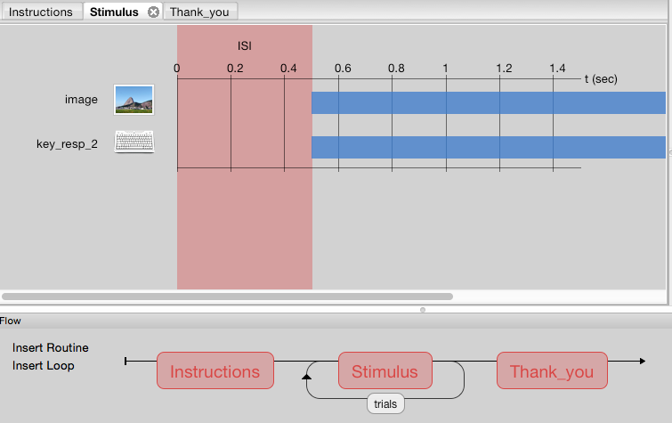
We now have instructions and a scene that flashes for 1 second 5 times, and we can record a response. Click
Lets check out the data.
This is good, but we can also loop through different scenes.
Let's use a new example. Imagine that Psychopy is in the pizza delivery business.
Psychopy needs to collect the pizza order and deliver it to the customer, then receive the money. Psychopy looks at the list of pizzas to be delivered, and delivers each in turn until there are no more. Similarly, Psychopy can collect an image from a list, deliver it to the participant, and then receives a response, continuing until the list is done.
This list can be saved to an excel spreadsheet. In your images subdirectory, there is a file called datafile.xlsx. This contains a ready-made list.
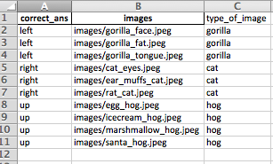
Like the path we entered to the kitten image earlier, the column images has a list of paths to images.
There are additional columns in the spreadsheet, in the pizza example, these can be thought of as the drink and a dessert that accompany the pizza. The drink and dessert in each row are specific to the pizza in that row.
Lets set it up. In this example we will use images of gorillas, kittens and hedgehogs. The instructions are:
You will see pictures
Press left for gorillas
Press right for kittens
Press up for hedgehogs
Press spacebar to continue
Click on Instructions in the Flow, and select  . Type the above into the Text box.
. Type the above into the Text box.
To tell Psychopy where to look for the datafile, click on trials in the Flow and select Browse.... Select the datafile.xlsx and hit OK. The path to the file is now in the dialog box, and below there will be a summary of what is included. In this spreadsheet there are 10 rows (conditions) with 3 columns (parameters) as shown below.
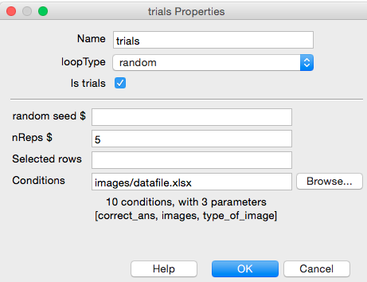
Now, to tell Psychopy to deliver the images from this list, click on Stimulus in the Flow, and the . In the Image box, type '$images'. The $ tells Psychopy to look for the column called images in the excel spreadsheet. Change the associated dropdown box to set every repeat. The image Properties should look like this:
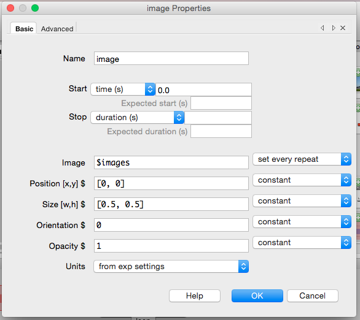
Click OK.
We now need to record the amount of money received following pizza delivery, or the button press recieved following the image delivery. Click the and type ' 'left', 'right', 'up' ' into Allowed keys. In the Store dropdown, select first key. Finally, click the box to Store correct and enter '$correct_ ans' in the Correct answer box. As with the image properties, this tells PsychoPy to look in the correct_ans column in the excel spreadsheet. Your Properties should resemble the image below.
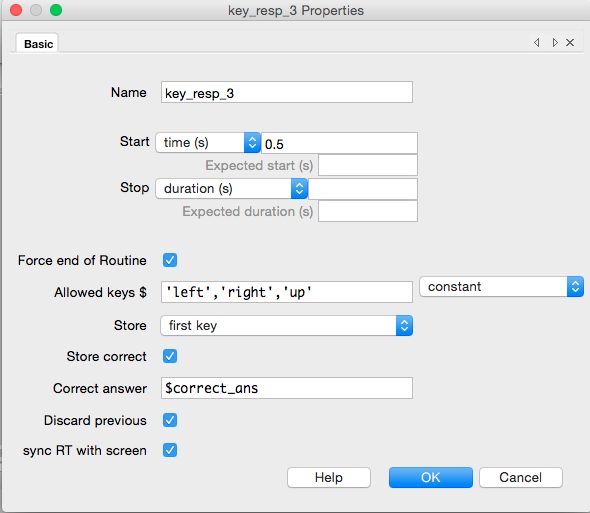
Your scene should now look like this:
Let's do it! Click
Learning objectives:
We will set up the notebook and load the additional software library we will need - "Pandas".
import pandas as pdThe Jupyter Notebook understands shell commands as well, we'll use this to find our data. We'll use the exclamation mark to signal that what follows is a shell command rather than Python code.
# print working directory
!pwd
/Users/talithaford/Dropbox/Conference-Workshop/ResBaz/2016/psychopy_lesson
# list files in 'data/'
!ls data/
tf1_visneuro_2016_Feb_02_1234.csv tf_visneuro_2016_Feb_02_1218.psydat
tf1_visneuro_2016_Feb_02_1234.log tf_visneuro_2016_Feb_02_1233.csv
tf1_visneuro_2016_Feb_02_1234.psydat tf_visneuro_2016_Feb_02_1233.log
tf_visneuro_2016_Feb_02_1218.csv tf_visneuro_2016_Feb_02_1233.psydat
tf_visneuro_2016_Feb_02_1218.logWe can use the 'read_csv' function of Pandas to read the datafile into a pandas DataFrame. A DataFrame will look familiar to anyone who has used Excel or SPSS.
# read the csv
df = pd.read_csv('data/tf1_visneuro_2016_Feb_02_1234.csv')
# print the first 5 lines of the DataFrame
df.head()| correct_ans | images | type_of_image | loop.thisRepN | loop.thisTrialN | loop.thisN | loop.thisIndex | key_resp_3.keys | key_resp_3.corr | key_resp_3.rt | date | frameRate | expName | session | participant | Unnamed: 15 | |
|---|---|---|---|---|---|---|---|---|---|---|---|---|---|---|---|---|
| 0 | up | images/egg_hog.jpeg | hog | 0 | 0 | 0 | 6 | up | 1 | 0.633549 | 2016_Feb_02_1234 | 60.205465 | visneuro | 1 | tf1 | NaN |
| 1 | right | images/cat_eyes.jpeg | cat | 0 | 1 | 1 | 3 | right | 1 | 0.550386 | 2016_Feb_02_1234 | 60.205465 | visneuro | 1 | tf1 | NaN |
| 2 | left | images/gorilla_tongue.jpeg | gorilla | 0 | 2 | 2 | 2 | left | 1 | 0.600392 | 2016_Feb_02_1234 | 60.205465 | visneuro | 1 | tf1 | NaN |
| 3 | up | images/santa_hog.jpeg | hog | 0 | 3 | 3 | 9 | up | 1 | 0.600248 | 2016_Feb_02_1234 | 60.205465 | visneuro | 1 | tf1 | NaN |
| 4 | right | images/ear_muffs_cat.jpeg | cat | 0 | 4 | 4 | 4 | right | 1 | 0.749853 | 2016_Feb_02_1234 | 60.205465 | visneuro | 1 | tf1 | NaN |
# drop the first row (under the header)
# the inplace option allows us to makes changes to the dataframe directly
# rather than having to save the output to another variable
df.drop(0, inplace=True)
df.head()| correct_ans | images | type_of_image | loop.thisRepN | loop.thisTrialN | loop.thisN | loop.thisIndex | key_resp_3.keys | key_resp_3.corr | key_resp_3.rt | date | frameRate | expName | session | participant | Unnamed: 15 | |
|---|---|---|---|---|---|---|---|---|---|---|---|---|---|---|---|---|
| 1 | right | images/cat_eyes.jpeg | cat | 0 | 1 | 1 | 3 | right | 1 | 0.550386 | 2016_Feb_02_1234 | 60.205465 | visneuro | 1 | tf1 | NaN |
| 2 | left | images/gorilla_tongue.jpeg | gorilla | 0 | 2 | 2 | 2 | left | 1 | 0.600392 | 2016_Feb_02_1234 | 60.205465 | visneuro | 1 | tf1 | NaN |
| 3 | up | images/santa_hog.jpeg | hog | 0 | 3 | 3 | 9 | up | 1 | 0.600248 | 2016_Feb_02_1234 | 60.205465 | visneuro | 1 | tf1 | NaN |
| 4 | right | images/ear_muffs_cat.jpeg | cat | 0 | 4 | 4 | 4 | right | 1 | 0.749853 | 2016_Feb_02_1234 | 60.205465 | visneuro | 1 | tf1 | NaN |
| 5 | up | images/marshmallow_hog.jpeg | hog | 0 | 5 | 5 | 8 | up | 1 | 0.766511 | 2016_Feb_02_1234 | 60.205465 | visneuro | 1 | tf1 | NaN |
# drop all colums with NA's
df.dropna(axis=1, inplace=True, how='all')
df.head()| correct_ans | images | type_of_image | loop.thisRepN | loop.thisTrialN | loop.thisN | loop.thisIndex | key_resp_3.keys | key_resp_3.corr | key_resp_3.rt | date | frameRate | expName | session | participant | |
|---|---|---|---|---|---|---|---|---|---|---|---|---|---|---|---|
| 1 | right | images/cat_eyes.jpeg | cat | 0 | 1 | 1 | 3 | right | 1 | 0.550386 | 2016_Feb_02_1234 | 60.205465 | visneuro | 1 | tf1 |
| 2 | left | images/gorilla_tongue.jpeg | gorilla | 0 | 2 | 2 | 2 | left | 1 | 0.600392 | 2016_Feb_02_1234 | 60.205465 | visneuro | 1 | tf1 |
| 3 | up | images/santa_hog.jpeg | hog | 0 | 3 | 3 | 9 | up | 1 | 0.600248 | 2016_Feb_02_1234 | 60.205465 | visneuro | 1 | tf1 |
| 4 | right | images/ear_muffs_cat.jpeg | cat | 0 | 4 | 4 | 4 | right | 1 | 0.749853 | 2016_Feb_02_1234 | 60.205465 | visneuro | 1 | tf1 |
| 5 | up | images/marshmallow_hog.jpeg | hog | 0 | 5 | 5 | 8 | up | 1 | 0.766511 | 2016_Feb_02_1234 | 60.205465 | visneuro | 1 | tf1 |
# save out new dataframe as csv
df.to_csv('data/ID001.csv', index=False)
# to read back in you can use:
#df = pd.read_csv('data/ID001.csv')**Now that we have cleaned the data, it might be helpful to visualise it.
To do this we need to import some packages. **
Matplotlib is a Python library that produces quality figures and graphs from data.
Seaborn is a Python library based on matplotlib, which provides additional graphical modifications for matplotlib figures and graphs.
import matplotlib as mpl
import matplotlib.pyplot as plt
import seaborn as sns # seaborn
# to see the plots in the workspace we use:
%matplotlib inline
# these are seaborn commands, they are used for asthetics
sns.set_color_codes()
sns.set_style('whitegrid')Create a basic plot of all the columns
df.plot()
<matplotlib.axes._subplots.AxesSubplot at 0x109768b50>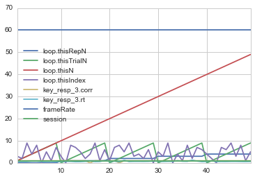
The plot is good, but it doesn't actually tell us much.
Let's used the package matplotlib.pyplot ('plt'), but first, find out what the function 'plot' in the package does.
plt.plot?To plot a single column (e.g. reaction time), enter the name of the column (the header) as a string in square brackets immediately following the dataframe label as shown below. The column header is the 'index' for that column. In this example, the plot will include the legend.
df['key_resp_3.rt'].plot(legend=True)
<matplotlib.axes._subplots.AxesSubplot at 0x109d68cd0>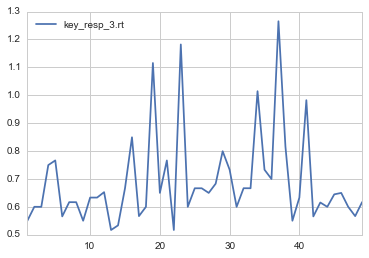
Seaborn (sns) has a nice distribution plot to visualise whether the responses are normally disributed.
sns.distplot(df['key_resp_3.rt'])
<matplotlib.axes._subplots.AxesSubplot at 0x109d9de10>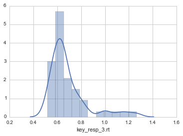
It is clear from the graphs that the first answer is much longer than the rest of the answers. This is more likely due to it being the first response and therefore it isn't real data. We should filter it out so it doesn't overly affect the result.
df_clean = df[df['key_resp_3.rt'] < .9]
sns.distplot(df_clean['key_resp_3.rt'])
<matplotlib.axes._subplots.AxesSubplot at 0x109e5f650>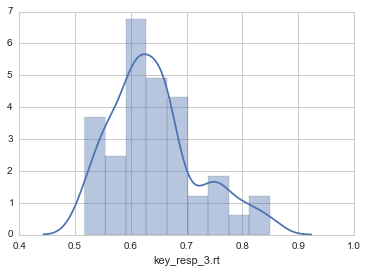
It's still not looking particularly normal but better. Maybe less than 0.3 would be better still...
We can plot the reaction time by the type of image by including the column name 'typeofimage' in parentheses before the index.
df_clean.groupby('type_of_image')['key_resp_3.rt'].plot(legend=True)
type_of_image
cat Axes(0.125,0.125;0.775x0.775)
gorilla Axes(0.125,0.125;0.775x0.775)
hog Axes(0.125,0.125;0.775x0.775)
Name: key_resp_3.rt, dtype: object
Creating a variable that groups reation time by the animal type gives some more functionality
animal_type_group = df_clean.groupby('type_of_image')['key_resp_3.rt']
# then we can plot that variable
animal_type_group.plot(legend = True)
type_of_image
cat Axes(0.125,0.125;0.775x0.775)
gorilla Axes(0.125,0.125;0.775x0.775)
hog Axes(0.125,0.125;0.775x0.775)
Name: key_resp_4.rt, dtype: object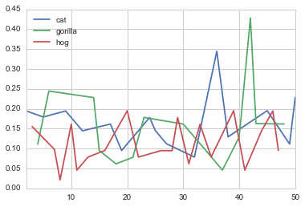
This doesn't tell us much, but we can now print out the statistics for that variable.
animal_type_group.mean()
type_of_image
cat 0.653995
gorilla 0.639744
hog 0.634237
Name: key_resp_3.rt, dtype: float64
print('Mean: ',animal_type_group.mean())
print('SD: ',animal_type_group.std())
('Mean: ', type_of_image
cat 0.653995
gorilla 0.639744
hog 0.634237
Name: key_resp_3.rt, dtype: float64)
('SD: ', type_of_image
cat 0.084515
gorilla 0.068218
hog 0.086569
Name: key_resp_3.rt, dtype: float64)We can also visualise the reaction time by the type of image as a boxplot
df_clean.boxplot('key_resp_3.rt',by = 'type_of_image',)
<matplotlib.axes._subplots.AxesSubplot at 0x10a165690>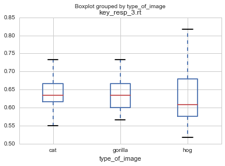
and save plot to the current working directory
plt.savefig('ID001_boxplot.png')
<matplotlib.figure.Figure at 0x10a87a390>